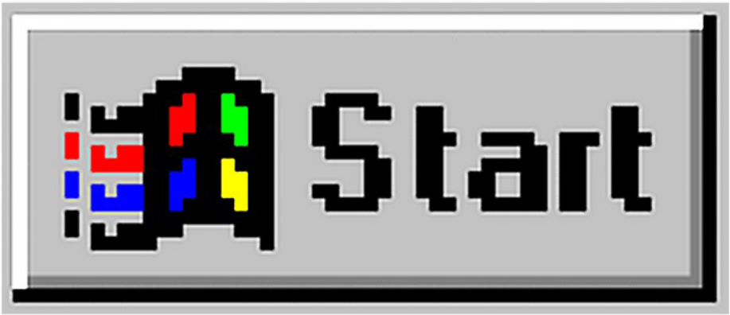
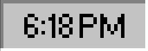

$%Free trip to Egypt!%&
!!DEFINETELY REAL!!
Invest in chimp coin, get $100,000
immediately in your bank account!
Click 'Ok' to win a brand new Iphone 14!
error - too much sass
Hot singles in your area!
xoxo

My Computer

Folder

Recycle Bin